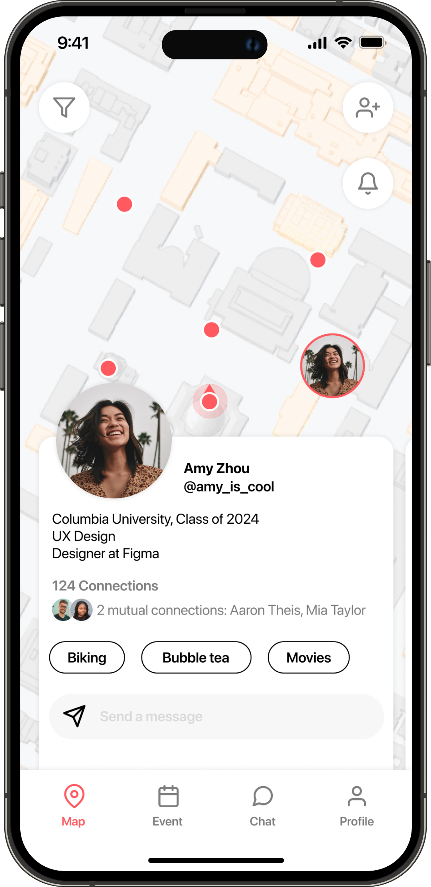
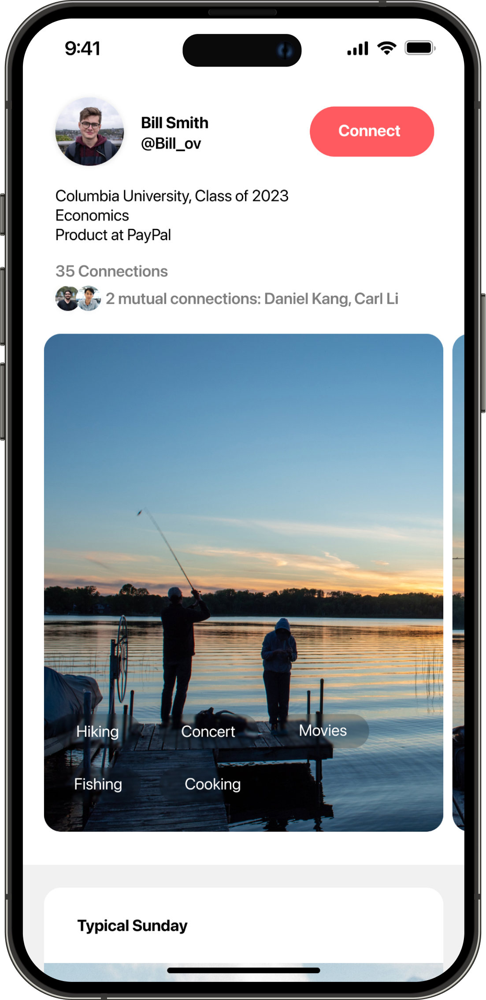
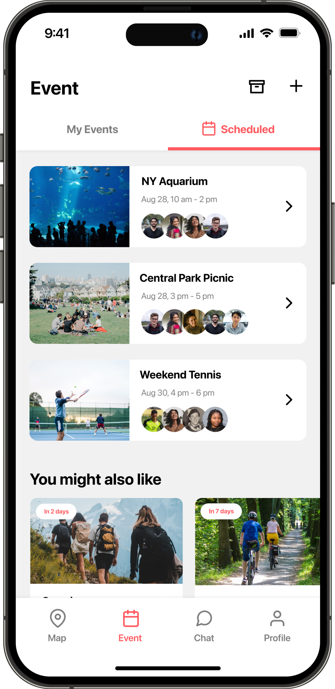

fooooof: Meet your friend of friend for social networking
We face a paradox where social media promises to amplify voices and the social aspect of our lives, yet it subsumes individuals into an anonymous, de-individualized public. We created fooooof to rediscover personal, individualized relationships again. It takes in a user’s location, and processes friends of friends through a graph-based database and deep-learning recommender systems. Since the recommendations are friend-sourced and collaboratively filtered, profiles likely share similar communities, interests and aspirations, adding a new layer of possibility to social computing, mediating between the virtual and real.



back